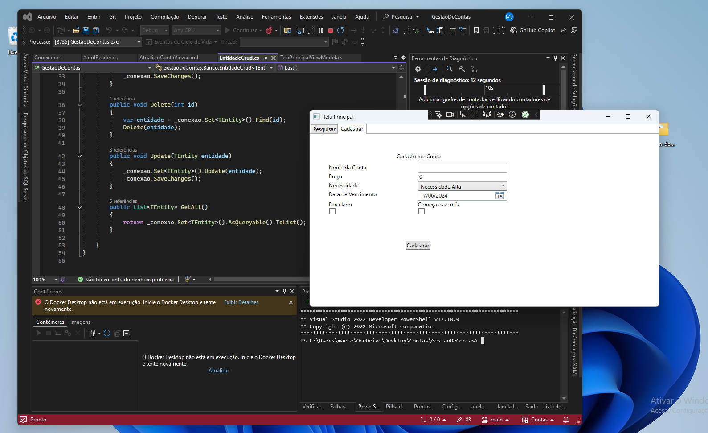
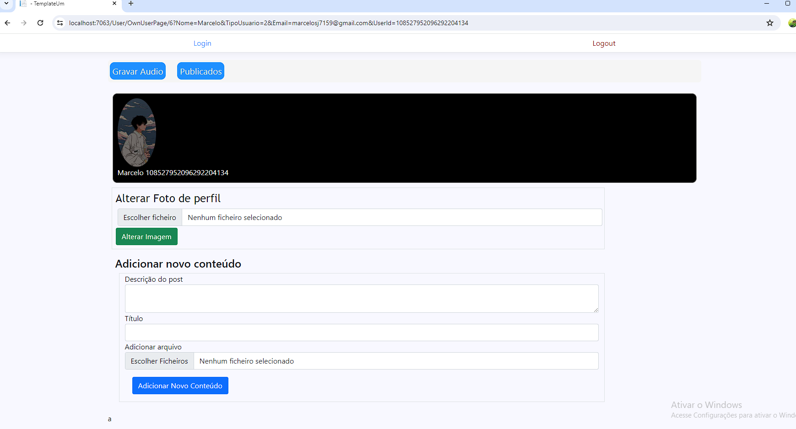

Marcelo Jaeger
 +55 51 9 8992-5651
+55 51 9 8992-5651
Projetos
WPF App
ASP.NET Core
API

Experiência Profissional
Developer - Móvel na Caixa (2024)
Desenvolvimento de um site hospedado em servidor Linux, utilizando Laravel e PHP com banco MySQL.
Desenvolvedor .Net - Universal Leaf Tobacco Company (2023 - 2024)
Trabalhei para uma multinacional do setor de tabaco, colaborando com um time de mais de 40 profissionais de TI. Participei do desenvolvimento de novas funcionalidades e na resolução de problemas.
Suporte e Desenvolvimento Desktop - Compumax SHOP (2021 - 2022)
Atuei no desenvolvimento de sistemas desktop WPF, utilizando MySQL em um sistema ERP. Também contribuí no desenvolvimento de bots para WhatsApp.